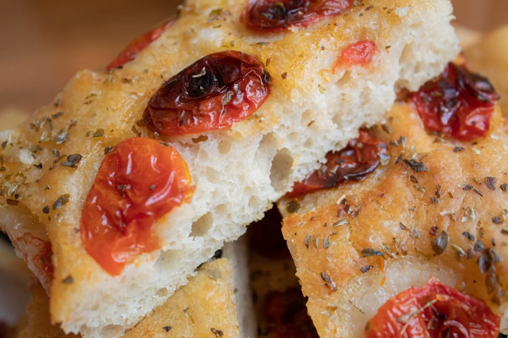
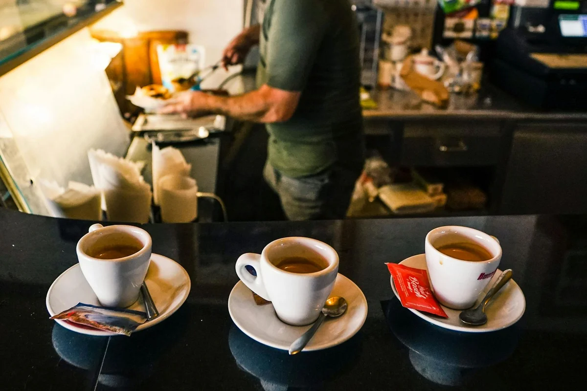

Introduction
There are food combinations that feel instinctively right, and then there is the Genoa focaccia cappuccino breakfast tradition: a practice so peculiar, so stubbornly local, that it manages to shock even seasoned Italian travellers who thought they had seen everything their country had to offer. Dunking a slab of warm, olive-oil-soaked focaccia into a frothy cappuccino is the kind of thing that, described on paper, sounds like a dare. In Genoa, it is simply Tuesday morning.
The ritual has been quietly practised in the city's bakeries and bars for generations, largely invisible to the outside world. That changed in the spring of 2026, when a wave of travel content creators and food journalists rediscovered Genoa as one of Italy's most compelling and underrated destinations, putting this breakfast habit in front of an international audience for the first time at any real scale. The reaction ranged from fascinated curiosity to outright disbelief, reigniting a debate that Genoese people find both amusing and slightly exhausting: why does everyone else find this so strange?
The honest answer is that the combination works. The saltiness of the focaccia cuts through the sweetness of the milk foam, the olive oil creates a brief, silky slick on the surface of the cappuccino, and the bread absorbs just enough coffee to change its character without losing its texture. It is breakfast engineering, arrived at not through culinary school but through decades of early mornings in a working port city where people needed something fast, satisfying, and deeply local.
This article goes beyond the viral moment to explore where the tradition actually comes from, why it is specific to Genoa and nowhere else, which bakeries are worth visiting to experience it properly, and what it reveals about the city's identity as a whole.
Why This Combination Exists Only in Genoa
To understand why this tradition exists, you need to understand what Genoese focaccia actually is, because it is not the thick, pillowy bread sold under the same name in most Italian supermarkets. Focaccia Genovese, officially recognised with an Indicazione Geografica Protetta (IGP) status since 2015, is a specific, technically demanding product. It must be between 1.5 and 2 centimetres thick, baked at very high temperatures, and finished with a generous quantity of Ligurian extra virgin olive oil applied both before and immediately after baking. The result is a bread that is crisp on the outside, soft and almost custardy inside, and deeply savoury rather than neutral.
That specific flavour profile is what makes the cappuccino pairing function. A thick, doughy bread would absorb too much liquid and collapse. A dry, bready focaccia would taste of nothing. The Genoese version, because of its high oil content and precise hydration, holds its structure for the few seconds it spends submerged and releases a faint olive oil note into the coffee that, counterintuitively, rounds out the bitterness of the espresso.
The geographical component matters too. Liguria has always been a coastal, mercantile region with a culture that prizes practicality and economy. Genoa was one of the great medieval trading republics, a city built by people who loaded and unloaded ships before dawn. The traditional Ligurian breakfast was never a leisurely, elaborate affair. It was fast, caloric, and local. Focaccia, available from bakeries that started their ovens in the early hours, was the obvious choice. Cappuccino, by the mid-twentieth century, was everywhere. Putting them together was not a culinary statement; it was efficiency.
The History Nobody Talks About: Focaccia as a Social Equaliser
Most articles about this tradition treat it as a charming quirk and move on. The more interesting layer is what the habit reveals about Genoese society across time.
In Genoa's medieval and early modern period, focaccia was not special. It was the bread of the poor, the bread of the docks, sold cheaply from wood-fired ovens in the caruggi (the narrow alleyways of the historic centre) to sailors, traders, and labourers. The Church was famously unhappy about Genoese parishioners eating focaccia during Mass, a practice documented in various diocesan complaints dating back to the sixteenth century. People apparently could not wait. They brought focaccia to church with them and ate it during the service, which tells you something both about how central the bread was to daily life and about the particular character of the Genoese.
Fast forward to the twentieth century, and the focaccia-cappuccino pairing became the great leveller of the morning commute. In the bars around Mercato Orientale and along Via XX Settembre, you would find a port worker and a bank manager standing at the same counter, doing exactly the same thing. The focaccia cost almost nothing. The cappuccino cost almost nothing. Together, they constituted a breakfast that required no sit-down, no cutlery, no ceremony. In a city that has always been slightly suspicious of ostentation, this mattered.
Today, that social dimension is part of why Genoese people are protective of the ritual. It is not a tourist attraction to them; it is something they do because their parents did it and their grandparents did it, in the same bakeries, at the same hours, without making a fuss about it.

The Insider Angle: Why Genoese Focaccia Tastes Different at 7am
Here is something that most travel content about this tradition misses entirely: the experience is time-sensitive in a way that goes beyond the cliché of "eat it fresh."
The best Genoese focaccia for the cappuccino ritual is the first batch out of the oven, typically between 6:30 and 7:30 in the morning. At this stage, the olive oil on the surface has not yet fully set; it is still slightly liquid, warm, and intensely aromatic. When a piece of this focaccia makes brief contact with hot cappuccino foam, a micro-emulsion forms at the surface: the oil disperses into the milk proteins in a way that creates a momentarily richer, almost buttery texture in the sip that follows. This does not happen with focaccia that has been sitting out for two hours.
Genoese bakers understand this implicitly. The best bakeries in the city pull focaccia from the oven in multiple batches throughout the morning specifically to maintain this quality window. If you arrive at a reputable forno after 9:30am and notice the focaccia looks slightly different, slightly more matte on the surface, the optimal moment has passed. It will still be excellent bread, but the cappuccino pairing will not perform the same way.
This is the kind of knowledge that locals hold without articulating, and it explains something that confuses visitors: why the Genoese seem almost ceremonially committed to having this particular breakfast at this particular hour. It is not nostalgia. It is physics.
Where to Try It: The Best Bakeries in Genoa for Focaccia at Breakfast
Not all focaccia is created equal, and in Genoa, the locals have strong opinions about which bakeries are worth the pilgrimage. The following are among the most respected, with practical details for planning a morning visit.
- Antico Forno della Casana (Via della Casana, historic centre): Operating in the medieval caruggi, this is one of the oldest continuously active bakeries in the city. The focaccia here is traditionally thin, almost cracker-like at the edges, with a generous oil application. First batch: around 6:45am. Expect a short queue.
- Panificio Mario Tossini (Recco, 20 km from Genoa): Technically outside the city, but worth including because Recco is the birthplace of focaccia col formaggio, a different but related product. Tossini is considered a benchmark for quality in the broader Ligurian tradition, and visiting here alongside a Genoa morning gives useful context for how varied the focaccia family actually is.
- Focacceria Il Mondo (Sestri Ponente neighbourhood): A neighbourhood favourite far from the tourist areas, this is where to go if the goal is to experience the ritual as locals actually live it, surrounded by people buying focaccia on their way to work rather than photographing it for social media.
- Panificio Patrone (Quinto al Mare): Beloved in the eastern residential neighbourhoods, open from 6:30am, and often cited by Genoese food writers as producing some of the most consistently excellent plain focaccia in the city.
Regarding price: a standard portion of focaccia (roughly 100 to 150 grams, enough for a proper breakfast) costs between €1.00 and €1.80 at most bakeries. A cappuccino at the bar next door runs €1.20 to €1.50. The total cost of this experience, widely considered one of the great food moments in Italy, is under €3.50. This is not a coincidence. It is the whole point.

How to Actually Do It: The Technique Matters
Watching a Genoese person do this for the first time is instructive, because the technique is not what most outsiders expect. It is not a long soak. It is not an aggressive dunk.
The standard approach is to break or cut a piece of focaccia roughly 4 to 5 centimetres wide, hold it at a slight angle, and submerge just the bottom edge into the cappuccino for no more than two to three seconds. The goal is to warm the base of the bread and allow it to absorb a thin layer of cappuccino without becoming soggy. The top surface should remain dry and slightly crisp. You eat it immediately, in one or two bites.
Some people prefer to dip the focaccia into the cappuccino foam only, never reaching the liquid coffee beneath. This is a lighter version of the ritual that preserves more of the bread's texture and is common among those who want the milk sweetness without the coffee bitterness in their bread.
What nobody does, at least nobody local, is leave the focaccia submerged while they check their phone, pull it out dripping, and eat it in four careful bites. The whole operation should take about fifteen seconds. It is a breakfast, not a ceremony.
One more note: order the cappuccino in a wide, shallow cup rather than a tall one. Some bars in Genoa will instinctively serve it this way, understanding the practical geometry of what you are about to do. If your cappuccino arrives in a tall glass, ask for a different cup. This is not considered unusual.
Why the Rest of Italy Still Does Not Understand This
The Italian reaction to the focaccia cappuccino tradition is worth examining because it is not simply "that sounds odd." It is often genuinely offended.
Italian food culture operates on a set of deeply held, regionally specific rules about combinations, temperatures, and sequences. Cappuccino is universally understood to be a morning drink, consumed before 11am, ideally with something sweet (a cornetto, a brioche, or a plain biscuit). The concept of pairing it with something savoury, particularly something oily and salty, strikes many Italians from other regions as a category error, not just unusual but structurally wrong in the way that ordering a dessert wine with antipasto would be wrong.
The Genoese response to this criticism tends to be a shrug and a redirect. "Try it" is the standard answer, offered without defensiveness. People from Milan, Rome, and Naples who visit Genoa and are persuaded to attempt the combination by a local friend report, with notable frequency, that they liked it, sometimes that they loved it, and almost always that they could not explain why it worked.
Food anthropologists who have studied Ligurian cuisine point to a broader pattern: Liguria has always occupied a border position, both geographically (squeezed between the Alps, the Apennines, and the sea) and culturally (a trading city that absorbed influences from France, North Africa, and the Middle East). Its food combinations have never followed the same logic as the interior. Savoury and sweet, fat and acidic, hot and cold: Ligurian cooking has a long history of combinations that strike outsiders as counterintuitive and insiders as obvious. The focaccia cappuccino is simply the most visible example of that tendency.
Planning Your Genoa Breakfast: Practical Details
If this tradition is the reason for a detour to Genoa (and it is a legitimate reason), a few practical points are worth knowing before the trip.
When to go: Weekday mornings between 7:00 and 8:30am offer the most authentic experience. Bakeries are busy with locals, the focaccia is at its freshest, and the whole rhythm of the city is oriented around this morning ritual. Weekends are fine but slightly calmer, with more variation in quality depending on the bakery.
How to order: At the bakery, ask for "focaccia, per favore" and specify whether you want plain (semplice) or with sage (con la salvia), which is a popular Genoese variant. Take your focaccia to the bar next door or nearby (many bakeries in the historic centre have a bar within ten metres) and order a cappuccino. You can bring the focaccia into the bar; nobody will object. This is understood.
Getting to Genoa: The city is served by Genova Piazza Principe and Genova Brignole train stations, with regular high-speed connections from Milan (approximately 1 hour 30 minutes) and direct trains from Turin (approximately 1 hour 45 minutes). From Barcelona, where many Tu Giuru readers are based, the most practical route involves a flight to Genoa's Cristoforo Colombo Airport, which receives regular connections from several Spanish cities.
Temperature note: Do not attempt the cappuccino dip with cold or room-temperature focaccia purchased earlier in the day. The ritual requires warm bread. If you arrive at a bakery after the first rush and the focaccia has cooled, ask if there is a fresher batch. There almost always is.
Final Thoughts
The focaccia cappuccino breakfast is one of those rare food experiences that genuinely surprises even people who think they know Italian cuisine well. It does not look like much from the outside: a piece of bread, a cup of coffee, a bar counter, a few seconds of dunking. But in practice it contains an entire city's relationship with food, with practicality, with identity, and with the particular pleasure of being right about something that everyone else finds strange.
Genoa is a city that rewards curiosity and punishes impatience. Most travellers pass through on the way to the Cinque Terre or the French Riviera, missing what is arguably the most interesting food culture on the Ligurian coast. The focaccia and cappuccino are not just a breakfast combination; they are an invitation to slow down, stand at a counter, and understand a place on its own terms.
If this piece has made you want to book a morning train to Genoa before doing anything else, that is precisely the correct response. Share it with someone who would either love this idea immediately or refuse to believe it works, either reaction is equally valid and both lead to the same conclusion: they need to try it themselves.
Frequently Asked Questions
Is dipping focaccia in cappuccino a real tradition in Genoa or just a tourist gimmick?
It is completely real and entirely local. Genoese people have been eating focaccia with cappuccino for generations, and the practice is most visible among residents doing their daily morning routine, not tourists. Visitors who arrive at bakeries in the historic centre before 8am will find locals of all ages doing exactly this, without any performative element.
Does focaccia dipped in cappuccino actually taste good?
Most people who try it report being pleasantly surprised. The olive oil in the focaccia interacts with the milk foam in a way that softens the coffee bitterness, while the salt in the bread contrasts well with the sweetness of the cappuccino. The texture, if done correctly with a brief two-second dip, remains pleasant rather than soggy. Both Italians from other regions and international visitors who try it in Genoa tend to rate the experience positively.
Where is the best place to try focaccia with cappuccino in Genoa?
The most recommended approach is to visit a traditional bakery in the historic centre (the caruggi) or in a residential neighbourhood such as Sestri Ponente or Quinto al Mare early in the morning, when the first batch of focaccia is fresh from the oven. Antico Forno della Casana in the medieval centre and Panificio Patrone in Quinto al Mare are among the most consistently praised options. The cappuccino is typically ordered at a bar immediately adjacent to the bakery.
What time should I arrive to try the focaccia cappuccino breakfast tradition in Genoa?
Between 6:30 and 8:00am is ideal. This is when the first batches of focaccia come out of the oven, the olive oil on the surface is still warm and liquid, and the combination performs at its best. Arriving after 9:30am means the focaccia will have been sitting for a while and will not deliver the same result, though it will still be good bread.
Why do other Italians find the Genoa focaccia cappuccino combination strange?
Italian food culture has strong, regionally specific rules about flavour pairings. Cappuccino is traditionally paired with sweet foods (a cornetto or brioche), and combining it with something savoury and oily contradicts a widely held instinct about what belongs together. Genoese food has a broader history of unconventional combinations rooted in the region's trading port culture and its exposure to diverse culinary influences, which makes this pairing feel normal locally but unusual everywhere else in Italy.
How much does the focaccia cappuccino breakfast cost in Genoa?
Very little. A standard portion of focaccia (100 to 150 grams) costs between €1.00 and €1.80 at most Genoese bakeries. A cappuccino at a local bar runs €1.20 to €1.50. The complete experience costs under €3.50, which is part of its cultural significance: it has always been accessible to everyone, from port workers to office employees.